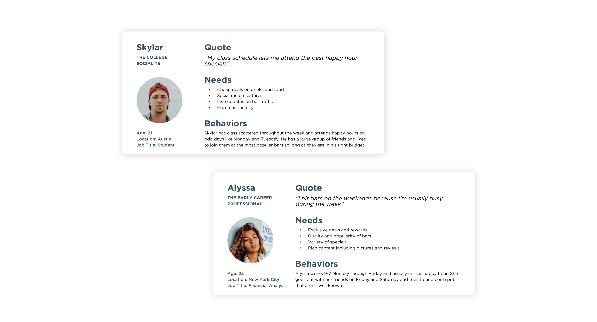
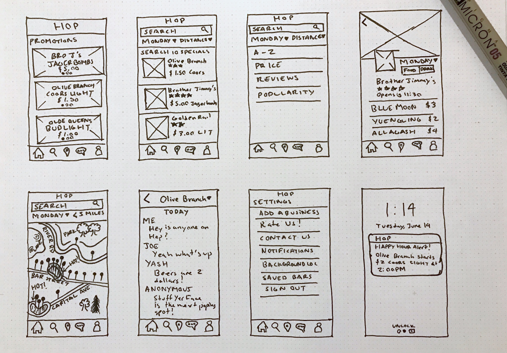
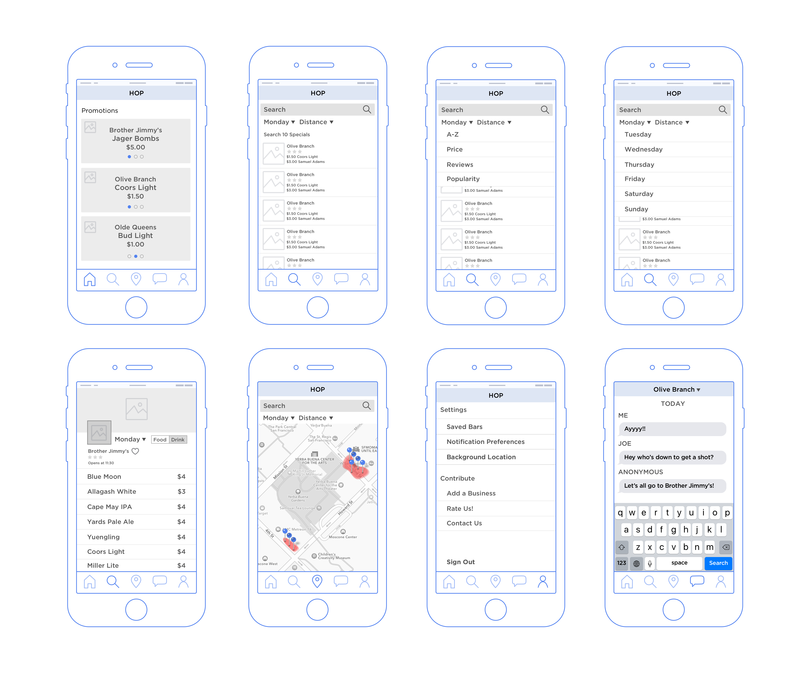

SUMMARY
Hop is an app that gives you information about local happy hours in your area. It tells you when the deals are happening, how active the bars are that you are going to, and allows you to chat anonymously with people in the bars. My role was the lead creative for the whole project, so I was in charge of the branding as well as the user experience design. I worked with Joe, our iOS developer to launch this project.
When I started on this project doing any user experience related activities was a hard sell. Our team was making design decisions and creating new features without understanding our users. I created two Proto-Personas to show how little we know about who was using our app.
After identifying some potential personas, I conducted User Interviews to validate our assumptions and find out what the users really wanted from a Happy Hour app. I asked questions to find out their demographic, needs, and behaviors.
We found that the early information we came up with for our Proto Personas was incorrect. We had two type of users, one who was younger and enjoyed partying and going out during the week, and one that was an early career professional and preferred to grab drinks later on in the week.
With information I gathered from the interviews, I did some competitive analysis on apps that our users were using in order to find out what we could improve upon. We found that our users were using Yelp, etc. We also did some research on similar happy hour apps and what we could improve on.
To begin the design phase of Hop, I created different fidelities of wireframes and designs and iterated until I reached the minimum viable product. Early stages of wireframes were shared with friends and family to get some quick and dirty feedback. I did not want this phase to take too long since there were already a lot of design patterns in the market that we could re-use.
 After originally releasing our app under the name RU Happy, the biggest complaints we got were that the name was pretty basic, and the visual design looked amateur. Many hours were spent scrolling Dribble/Behance for design inspiration and watching pen tutorials in illustrator to create the icons and logo.
The branding of our app was the hardest part for the team. I never knew it would be so hard to come up with a logo, name, and color scheme that was original. We went back on forth on names, argued over logos, and changed accent colors a thousand times.
I wanted our brand to feel like a comfortable bar or a really good drink so I picked a warm palette that was easy on the eyes. The name came from the idea of hopping from bar to bar and the logo reflects that idea. Below you can see an early attempt at creating our product originally under the name RU Happy. It’s easy to see how much better I got after this long exercise in Branding and Visual Design :)